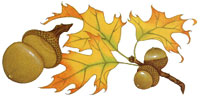
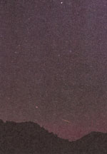

Autumn Acorn
October/November 1997
Seasons of the Earth and Sky
Two billion squirrels can't be wrong.
By Fred Schaff
We all know that acorns fall and accumulate on the ground in autumn, of course. And we all have been reminded at some time or other that mighty oaks from little acorns grow. But how often do we really look at this fruit in all its variety of size, shape, and styling?
Each acorn has its cup, but that cup may be very shallow or may almost completely enclose the nut. The cup may be rough, prickly, or have smooth scales. The nut itself may be roundish, tapered, or even cylindrical. The surface of the acorn nut sometimes has a rather rough finish but may also have a seemingly waxed or varnished look and feel. Then there is the color of acorns. The variety is not as great as that of autumn leaves, but you'll be surprised if you start picking them up and looking. You'll see mixtures of green, yellow, and every kind of brown from tan to mahogany. The hues are muted compared to some autumn leaves, but perhaps that is a pleasant contrast-and it seems appropriate for so humble a thing.
Acorns come only from oaks. There are two major classes of oak, the white oak group (with rounded leaf lobes) and black oak groups (with pointy leaf lobes), and their acorns are remarkably different in their life-stories as well as in some other ways.
Perfect acorns of the white oak itself are hard to find because they grow and fall in just a few months, and then quickly decay or are seized as food by a wide variety of animals and birds. They're also hard to find because the white oak doesn't mature enough to bear acorns for about 50 years! In contrast, acorns of the black oak family take two years to ripen, so some are always on the tree. In fact, there may be two generations of them, distinguishable by size, on a tree at once. Furthermore, once these acorns do fall to the ground, they prove quite resistant to disintegration and are not a favored food of wildlife because they are bitter. The acorns of the chestnut oak, a member of the white oak family, are said to be the sweetest (in northern forests at least) for human beings to roast and eat.
Can acorns or their gatherers be weather prognosticators? Some people say that if squirrels are collecting unusually great numbers of acorns in autumn, a hard winter is sure to follow. That either trees or squirrels or both could be affected by a prolonged spell of cool weather in summer or autumn seems reasonable enough. But temperatures rarely remain significantly below-average (or above-average) for several seasons in a row-a very cold autumn is not frequently followed by a very cold winter. Only factors like certain ocean current temperature changes in parts of the mighty Pacific seem to be reliable predictors of what some regions' general weather will be like months in the future.
A Parade of Planets
During much of October and November 1997 a very unusual circumstance occurs: all the planets are above the horizon at one time for a while after sunset! Actually, dim Pluto is too low in bright sky during these months for anyone to see, and you need binoculars and detailed finder charts (like those in Sky & Telescope magazine's May issue) to locate Uranus and Neptune. A wonderful feat to try in mid-to-late November, however, is to see all five of the classic naked-eye planets at one time. Mercury will be the hardest to see, a bright point of light but one that appears very low in the west-southwest before dusk is over.
The other four bright planets are easy to spot as long as your view of the southwest sky is not obstructed. Low in the southwest for a few hours after sundown are Venus, brightest point of light in the sky, and Mars, much fainter but forming a close companion with Venus week after week. Jupiter is the second-brightest planet and is fairly high in the south at nightfall. Saturn is the brightest object rising in the east at nightfall these months.
Our Almanac table lists the many, many arrangements of these planets with each other, with the Moon, and with the stars. Something to bear in mind is that the separations in "degrees" can be estimated in a simple way: your fist held out at arm's length is about 10 degrees wide. Most of the sights are easily visible to the naked eye, but two of the most remarkable do require a telescope. They are the hiding of a star by Jupiter on November 12 and the "grazing occultation" of Saturn by the Moon on November 11. The "graze" occurs when Saturn and its rings pass right along the edge of the Moon so that they are partly visible behind lunar mountains and valleys for several minutes. The graze will only be visible in a band several dozen miles wide, running from southern Texas to southern New Jersey and Cape Cod (south of the band Saturn goes completely behind the Moon; north of the band it is a close miss).
Another astronomical event to look for is the Leonid meteor shower, zooming from the southeast in the hours before dawn on November 17. It is next year and 1999 that the passage of the Leonids' parent comet may cause this annual display of shooting stars to burst into a "meteor storm," thousands of meteors per hour, as seen from some parts of the world. But last year there was a remarkable display of almost entirely very bright Leonids. In a single 20-minute period I saw two Leonids bright enough to light up the landscape and cast shadows, and the trails left by them remained visible to the naked eye for several minutes. If a similar display occurs this year, not even bright moonlight will severely diminish its splendor.
Colors Around the Moon
If you ask people who are generally observant of nature whether they have ever seen lovely colors in clouds passing by the Moon, some of them will say yes. But how many people could name those colors and correctly recall the arrangement of the hues? Very few people know the facts about lunar coronas.
These beautiful patterns of color must be distinguished from "halos," rings of light which are far larger and which are caused only by ice crystals in cirrus clouds. The most famous halo is the huge "ring around the Moon." A lunar corona occurs in a disk-shaped area right up close to the Moon. Closest to the Moon is a greenish or bluish color, bounded on the outside by a thick band of reddish light. This is the first or innermost set of colors in a lunar corona, but sometimes there are fainter repetitions of the sets of colors outside of the first set (blue or green then red, blue or green then red, and so on.) Lunar coronas can occur in almost any cloud which is not so opaque as to hide the Moon altogether, but most of them are caused by clouds with water droplets, only some of them by high clouds with ice needles. And, instead of being caused by reflection and refraction (bending) of light by ice crystals (as is the case with halos), coronas are caused by a process called "diffraction." Diffraction occurs when a tiny aperture (like a pinhole) or particle (like a cloud droplet or ice needle edge) is similar in size to the wavelengths of light. Different colors of light are produced by different wavelengths, and (to simplify) cloud particles can block light from certain positions around the light source and intensify others. (Interestingly, the colors we sometimes see on roads after a rain are formed by the diffraction of light from incredibly thin deposits of oil on the road surfaces.)
Sometimes clouds are too scattered or too far from the Moon to reveal the concentric bands of a fully formed corona, and we just see patches of color here and there on the clouds as they pass the Moon. We call these "iridescent clouds":
As October gives way to November, the weather in much of the U.S. becomes much cloudier. Many locations have their cloudiest conditions of the year in November and December. But one consolation for sky-watchers is the appearance of numerous lunar coronas. The bigger the corona, the smaller the droplets or ice needles causing it. The more uniform the size of the droplets or needles (all else being equal), the more intense and pure the colors. But the pastels of coronas are beautiful. So is the changeability of coronas-and the way it often seems to be the Moon itself that is moving, wading through a sea of surrounding color.
Almanac for October-November 1997
October
1 NEW MOON, 12:51 P.M. EDT.
2 Rosh Hashanah (actually begins at sunset of October 1-date of New Moon nearest to autumn equinox)-start of Jewish year 5758.
4 St. Francis of Assisi Day; crescent Moon far to right of Venus.
5 Look in southwest about 1 hour after sunset to see Moon, Venus, and much dimmer Mars form a triangle about 7 to 8 degrees on each side (this distance is about that of a wide-field binocular views)-Venus at bottom, Moon and Mars at top (with star Antares to the left of Mars).
6 Moon about 9 degrees (a bit less than 1 width of your fist at arm's length) upper left of Mars.
8 Jupiter halts retrograde motion in Capricomus, resumes direct (eastward) motion in relation to the background stars.
9 FIRST QUARTER MOON, 8:22 A.M. EDT; Leif Eriksson Day.
10 Saturn at opposition, rising at sunset, and visible all night long-for weeks around this time, the planet is closest, brightest, and in telescopes appears its biggest; Moon to the upper right of Jupiter.
11 Yom Kippur (actually begins at sunset of October 10); Moon well to the left of Jupiter; Mars and its "rival" (the similarly orange-gold star Antares, the heart of Scorpius) closest together (about 3 1/2 degrees apart) tonight and tomorrow night they are to the left of the very brilliant Venus.
12 Venus equally far (5 degrees) from Mars and Antares.
13 Columbus Day (observed); Thanksgiving (Canada); Native Americans Day (South Dakota); Mercury at superior conjunction with Sun-technically, all of the planets are now above the horizon after sunset until November 27.
14 Venus-Mars-Antares "trio"-that is, all three celestial objects fit within a circle about 5 degrees wide (the field of view of an average pair of binoculars); Moon well to upper right of Saturn at dusk.
15 FULL MOON, 11:46 P.M. EDT-"Hunter's Moon" (the Full Moon after Harvest Moon); Moon just to the lower left of Saturn at dusk (low in east).
16 Succoth; Venus less than 2 degrees north of Antares.
17 Asteroid 4 Vesta at opposition (visible all night long-but requires binoculars and finder chart like those in Sky & Telescope magazine to locate and see).
18 Alaska Day; almost perfect line, about 5 1/2 degrees long, of Mars, Venus, and Antares (from upper left to lower right).
19 Moon hides the star Aldebaran before dawn as seen from most of the U.S.
20 Sightings of the Orionid meteors (from the south in the hours just before dawn) are hindered by bright moonlight these next few days.
21 Venus straight below Mars-less than 2 1/2 degrees from Mars now through October 29.
23 LAST QUARTER MOON, 12:48 A.M. EDT; the swallows leave San Juan Capistrano until the spring; at 5 A.M. EDT, Sun enters astrological sign Scorpio but is really still in constellation Virgo.
24 Venus and Mars almost identically close to each other from now through October 26.
25 Venus-Mars closest together tonight Oust over 2 degrees apart).
26 Daylight Saving Time ends at 2:00 A.M. local time.
30 Sun leaves Virgo, enters constellation Libra, 6 P.M. EST; Moon 23 to 20 hours before New Moon, amazingly thin crescent, possibly visible very low in east 45 minutes before sunrise.
31 Halloween (All Hallows' Eve); NEW MOON, 6:01 A.M. EST; Nevada Day.
November
1 All Saints' Day; Samhain (ancient Druid holiday, ancestor of Halloween-pronounced like "savin"); through a telescope Venus may look like an exactly half lit Moon one of these next few days.
2 All Souls' Day.
3 Venus-Mars-Moon line tonight, with Moon far to right.
4 Election Day; Will Rogers Day (Oklahoma); Moon far above Venus tonight (with Mars to the right of Venus).
5 Guy Fawkes Day; Jupiter at east quadrature (in the due south about sunset).
6 Venus at greatest elongation from Sun in evening sky, 47.1 degrees-but Venus also farthest south in the heavens this day, so it will appear highest in the dusk sky next month.
7 FIRST QUARTER MOON, 4:43 P.M. EST; halfway point of autumn; Moon just above Jupiter tonight.
9 Mars at its farthest south in heavens-just three days after Venus was; Mars about 1/2 degree from Lagoon Nebula in telescopes tonight and tomorrow night.
11 Veterans Day; Admission Day (Washington); Martinmas; Moon hides Saturn around 7 P.M. EST as seen south of a line running from southern Texas to southern New Jersey and Cape Cod-within a few dozen miles of this line, viewers with telescopes see amazing "grazing occultation" (see text and Sky & Telescope for details).
12 Jupiter passes in front of star almost as bright as its four big moons around 8:30 P.M. to 8:45 P.M. EST (see text of accompanying article and Sky & Telescope magazine for details of how to see this with a telescope).
13 Star very near Jupiter's moon Callisto tonight (telescope needed).
14 FULL MOON, 9:12 A.M. EST-"Frosty Moon" or "Beaver Moon."
16 Start looking for Leonid meteors from the east this evening.
17 Peak of Leonid meteor shower may be this morning, and despite bright Moon, dozens (or more) meteors might be seen each hour-maybe even in bright moonlight if they are as bright as those in last year's Leonid shower.
19 Discovery Day (Puerto Rico).
21 LAST QUARTER MOON, 6:58 P.M. EST.
22 At 2 A.M. EST, Sun enters astrological sign Sagittarius-but is really still in constellation Libra until 10 P.M. EST; Sun leaves Libra, enters constellation Scorpius at 10 P.M. EST (will be in Scorpius for only 6 days).
26 St. Catherine's Day.
27 Thanksgiving Day; Pluto at superior conjunction-end of all 9 planets being in the sky at dusk.
28 Mercury at greatest eastern elongation-but a generally poor showing.
29 NEW MOON, 9:14 P.M. EST; Sun leaves Scorpius and enters Ophiuchus at 5 P.M. EST.
|
 ILLUSTRATION: JEAN GARDNER |
 A picturesque view of Venus, Mars, Jupiter, and the Moon at dusk in Arizona's Superstition Mountains. |
 Leonid meteor streaks through sky during meteor shower at Organ Pipe Cactus National Monument |